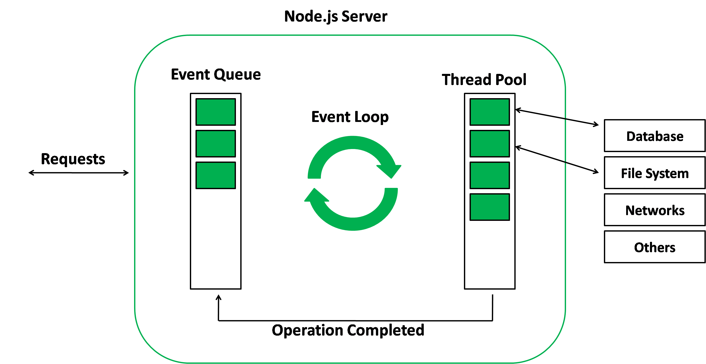

## Node.js Workshop Introduction to JavaScript and REST API development with Node.js. <span style="font-size: 28px;"> - Sandip Nirmal </span>
### JavaScript Basics (Day - 1) <br /> - What is JavaScript - How JavaScript works - JavaScript vs TypeScript - What is Node.js - REST
### What is JavaScript <br /> <small> JavaScript often abbreviated as JS, is a programming language that conforms to the ECMAScript specification. JavaScript is high-level, often just-in-time compiled, and multi-paradigm. It has curly-bracket syntax, dynamic typing, prototype-based object-orientation, and first-class functions. </br> </br> - Wikipedia </small> <aside class="notes"> Brief History </aside>
What is JavaScript
#### Dynamic Typing ```js[1|2|3|4|5] let a = 10; a = 'Ten'; a = []; a = 30; console.log(a) // 30 ``` <small> Interpreter assigns variables a type at runtime based on the variable's value at the time. </small>
#### Prototype based object orientation ```js [1-5|7-8] function Person(first, last, age) { this.firstName = first; this.lastName = last; this.age = age; } const person1 = new Person("John", "Doe", 50); const person2 = new Person("Sally", "Rally", 48); ``` ##### Prototype Inheritance ```js [1|2|3|4] Person.prototype.nationality = 'Indian'; person1.nationality = 'Unknown' console.log(person1.nationality) // Unknown console.log(person2.nationality) // Indian ```
##### First class functions - treated like any other variable ```js // variable assignment and annonymous var getUserName = function(user) { return user.name; } // Pass as value function printSum(computeSum) { var sum = computeSum(); console.log(sum); } // Return as value function sayHello() { return function() { console.log("Hello!"); } } ```
### How JavaScript Works? <br /> <img src="./assets/javascript-event-loop-step-1.png"/> <aside class="notes"> <ul> <li>Sync vs Async</li> <li>Callstack</li> <li>Callback Queue</li> <li>APIs - Browser</li> <li>Event Loop</li> </ul> Story of tasks. <ol> <li>Make Tea</li> <li>Do Laundry</li> <li>Order Food</li> <li>Clean Room</li> </ol> Example: http://latentflip.com/loupe/?code=JC5vbignYnV0dG9uJywgJ2NsaWNrJywgZnVuY3Rpb24gb25DbGljaygpIHsKICAgIHNldFRpbWVvdXQoZnVuY3Rpb24gdGltZXIoKSB7CiAgICAgICAgY29uc29sZS5sb2coJ1lvdSBjbGlja2VkIHRoZSBidXR0b24hJyk7ICAgIAogICAgfSwgMjAwMCk7Cn0pOwoKY29uc29sZS5sb2coIkhpISIpOwoKc2V0VGltZW91dChmdW5jdGlvbiB0aW1lb3V0KCkgewogICAgY29uc29sZS5sb2coIkNsaWNrIHRoZSBidXR0b24hIik7Cn0sIDUwMDApOwoKY29uc29sZS5sb2coIldlbGNvbWUgdG8gbG91cGUuIik7!!!PGJ1dHRvbj5DbGljayBtZSE8L2J1dHRvbj4%3D </aside>
JavaScript vs TypeScript
<small>TypeScript is Superset of JavaScript</small> <img src="assets/typescript.png" /> <aside class="notes">Why TypeScript?</aside>
#### Types ```js[1-2|3|4] let anExampleVariable = "Hello World"; // let anExampleVariable:string = "Hello World"; anExampleVariable = 10; // Error console.log(anExampleVariable); ```
#### Interfaces ```js[1-6|8-10] // Basic Inteface Example interface User { firstName: string, lastName: string, age?: number // optional } function getUserName(user: User): string { return `${user.firstName} ${user.lastName}`; } getUserName({first_name: 'Sandip'}) // Results in error ```
#### Enums ```js[1-7|9] // Basic Enum Example enum Direction { Up = 1, Down, Left, Right } console.log(Direction.Up) ``` <aside class="notes"> Examples: https://www.typescriptlang.org/play?#code/PTAEHUFMBsGMHsC2lQBd5oBYoCoE8AHSAZVgCcBLA1UABWgEM8BzM+AVwDsATAGiwoBnUENANQAd0gAjQRVSQAUCEmYKsTKGYUAbpGF4OY0BoadYKdJMoL+gzAzIoz3UNEiPOofEVKVqAHSKymAAmkYI7NCuqGqcANag8ABmIjQUXrFOKBJMggBcISGgoAC0oACCoASMFmgY7p7ehCTkVOle4jUMdRLYTqCc8LEZzCZmoNJODPHFZZXVtZYYkAAeRJTInDQS8po+rf40gnjbDKv8LqD2jpbYoACqAEoAMsK7sUmxkGSCc+VVQQuaTwVb1UBrDYULY7PagbgUZLJH6QbYmJAECjuMigZEMVDsJzCFLNXxtajBFQAIQYclgpNGoAAoqsGIgakp3DQzCy2RyAGqOCgMaTuUAAXlAACIABIwaAYcDwMjRKXBHms9nuQWUEViyUARgADABuYIITiCeDuAIK5gACg1fO1Qr1kAAlMFijS6czOOxEMzNRzFKiA6AACIUJywVAUeBeADeihKDwIEtABt4Kcj8AknGzJRekGSqELoCeFGYmFQigAvuaE1abXb7VGY3GEwE057KWAfepQABJbYlnooXlapQZBRkZLjx6CH6gZMlErJaOCVAAOTZkHy11QlE4zHLJUYW93yAPW+Pp5zJQYzH3gwD0h+9eCyS4sfjXmfqAPEuZBXpA9rsMBB5AT87o3kejKrmuTgEmQXgAAYACSJhBPwBBuvw7nudagFhOFkLatKEcgdZoWaDaKAB0EgXu9qJvhW4APqcHuB4AOTEC4VC8XWvYqDgDQeKhoCIMqzgguwNDfG4ZjMOwT6QPwsDQOoiQivAegiF4UqThyghSkkOJSuADioLxwjbpAEhSkEKgAPLfGQuxLvwAGHo4CiuNIeCgE4Mk6Iy3xLuiiAwsIVxKRIyrRCIBgcDi3QsGwXDcEEJRAA </aside>
### What is Node.js <div class="fragment" data-fragment-index="1"> <small>Node.js is a JavaScript runtime environment based on V8 engine. Which helps running JavaScript outside browser.</small> </div> <div class="fragment" data-fragment-index="2">  </div> <aside class="notes"> <ul> <li>Refer - Event Loop Image from previous slide</li> <li>Browser Sandbox</li> <li>Accessing lower level OS APIs using Libuv</li> <li>JavaScript in Browser vs Node.js (OS Module) examples</li> </ul> Learn: https://nodejs.dev/learn </aside>
REST -
Representation State Transfer
- Software architecture for creating Web Services. - Stateless - Need to send all information as a part of request. - Functionality are considered resources and are accessed using Uniform Resource Identifiers (URIs).
##### User ```[1-3|5-7|9-13|15-19|21-23] # User List HTTP GET /users # Get Particular User HTTP GET /users/{userId} - unique user Id # Create New User (Create Resource) HTTP POST /users Paylod - JSON # Edit User HTTP PUT /users/{userId} Paylod # Delete User HTTP DELETE /users/{userId} ```
Day 2
### REST API development with Node.js <aside class="notes"> </aside>
### Express Framework <aside class="notes"> ExpressJS Routing Middlewares Controllers Factory Pattern / Ice Factory </aside>
### Testing <aside class="notes"> Unit Test Jest Supertest </aside>
Thank You!
Github:
@SandipNirmal